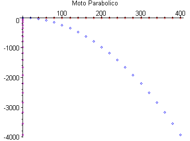
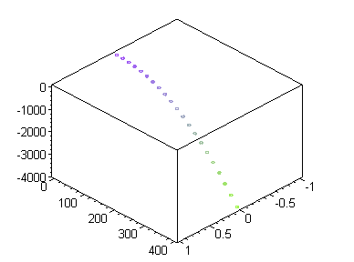

Moto Parabolico - Scomposizione del Moto
G.Piluso e R.Virili - 2003
> restart:
> with(plots):
> yo := 0.0:
> xo := 0.0:
> g := 9.81:
> V:=20:
> theta:= 0:
> Vx:=V*cos(theta):
> Vy:=V*sin(theta):
> x := Vx*t+xo:
> y := -g*t^2+Vy*t+yo:
> N:=20:
> px:=t->Vx*t+xo:
> A:=array(0..N):for i from 0 to N do A[i]:=px(i);od:#print(A):
> py:=t->-g*t^2+Vy*t+yo:
> B:=array(0..N):for i from 0 to N do B[i]:=py(i);od:#print(B):
> puntixy:=pointplot({seq([A[i],B[i]],i=0..N)},color=blue):
>
> px:=t->Vx*t+xo:
> AA:=array(0..N):for i from 0 to N do AA[i]:=px(i);od:#print(AA):
> py:=t->0:
> BB:=array(0..N):for i from 0 to N do BB[i]:=py(i);od:#print(BB);
> puntix:=pointplot({seq([AA[i],BB[i]],i=0..N)},color=red):
>
> px:=t->0:
> AAA:=array(0..N):for i from 0 to N do AAA[i]:=px(i);od:#print(AAA):
> py:=t->-g*t^2+Vy*t+yo:
> BBB:=array(0..N):for i from 0 to N do BBB[i]:=py(i);od:#print(BBB);
> puntiy:=pointplot({seq([AAA[i],BBB[i]],i=0..N)},color=magenta):
>
> display({puntixy,puntix,puntiy},title="Moto Parabolico");

>
>
points:= { seq([0,x,y],t=0..N)}:
pointplot3d(points,axes=boxed,symbol=circle);
